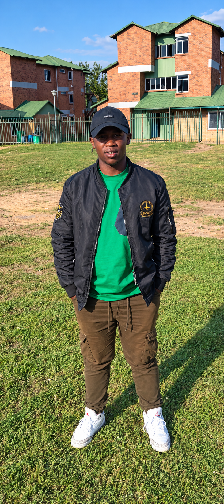

Welcome to My Website

A Little About Me
Hello, and welcome! I am Bongile K'hethane, a first-year Bachelor of Science (General) student at the National University of Lesotho in Roma. I come from Semonkong, a beautiful rural area in the Maseru District, where life is peaceful and surrounded by mountains. I am curious about science, I enjoy learning new things, and I love animals. This website is my first step in learning how to build pages from scratch using HTML.
Growing up in Semonkong taught me the value of community, hard work and respect for nature. I may not have a family photograph to share here, so I have included my friend Thato Motloheloa, who is also from Semonkong. Friends like Thato are like family to me: we support each other through our studies and remind one another of where we come from.